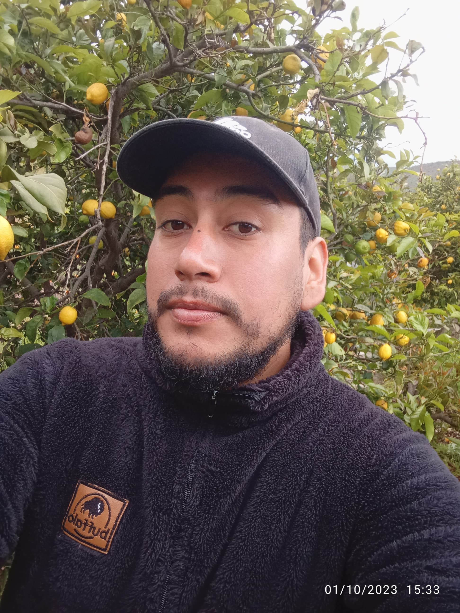

Curriculum
Licencia de conducir : Clase B
Comuna: Petorca, Valparaíso
Edad: 29 años
N° de contacto: +56932840681
Correo: farias.l.jose95@gmail.com
Experiencias
- AGRICOLA "SANTA CATALINA" (2023 - hasta la fecha) - ADMINISTRADOR DE CAMPO AGRICOLA PRINCIPALMENTE DE FRUTALES CÍTRICOS, PALTOS Y HORTALIZAS
- INSTITUTO DE INVESTIGACIONES AGROPECUARIAS, INIA LA PLATINA, MINISTERIO DE AGRICULTURA (2022 - 2023) - ENCARGADO DE CAMPO EXPERIMENTAL en Proyecto FONDECYT N° 11200702 “Structure and Genetic diversyti of Tomato ( Solanum Licopersecum) Microbiome in response to host Genotypic diversity, difereferent enviroment and Drought Stress Conditions”
- SETCONT OFICINA DE CONTABILIDAD (2021 - 2022) - LABORES DE ADMINISTRACION Y CONTABILIDAD GENERAL
- VIÑA ESPALDARES DEL MAIPO S.A (2020 - 2021) - ASESOR ENOLOGO EXPERTO EN PROCESO DE VITICULTURA Y VINIFICACION
- LA MAISON DES FOUS RESTORAN DE GASTRONOMÍA INTERNACIONAL (2017 - 2020) - CHEF JEFE DE COCINA.
Estudios
- Curso nombre - Alura Cursos con la certificación
- Curso nombre - Alura Cursos con la certificación
- Curso nombre - Alura Cursos con la certificación
